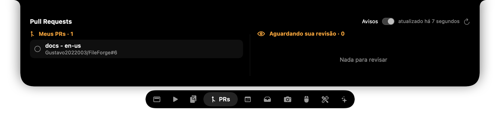
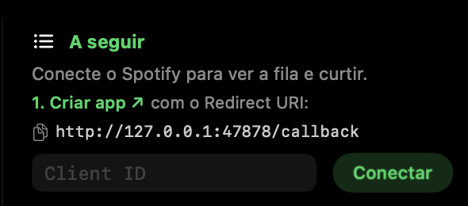
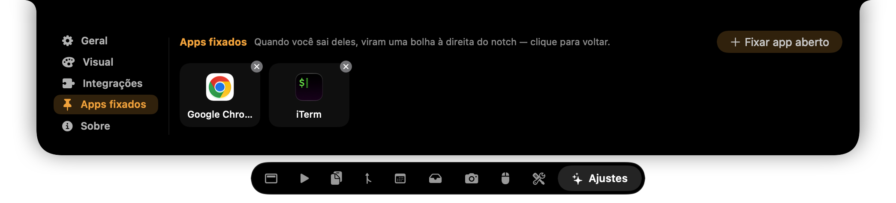

Quase tudo no Harbor funciona assim que você abre o app. Este manual cobre as partes que precisam de uma
permissão do macOS, de uma conta ou de um pequeno ajuste para funcionar, com o passo a passo de cada uma.
Antes de começar
O que já funciona sozinho e o que pede um minuto de atenção.
Funciona sem configurar
Música do Spotify e do Música (pede só a Automação)
Os Ajustes do Harbor ficam dentro do próprio notch.
Passe o mouse no topo da tela (ou aperte ⌥Espaço) e clique em ✦ Ajustes, a última aba.
Ao longo do manual, um caminho como Ajustes›Integrações indica onde clicar.
01
Instalação e primeira abertura
⏱ 2 minUma vez por Mac
Por que precisa de atenção
O Harbor é assinado, mas não é notarizado pela Apple, porque a notarização exige a conta paga de desenvolvedor.
Por isso, na primeira abertura o macOS bloqueia o app. É só liberar uma vez.
Baixe o instalador
Na página de Releases do repositório, baixe o arquivo Harbor-X.Y.Z.dmg mais recente. Se preferir, o .zip também serve. Depois disso, as novas versões se instalam por Ajustes›Sobre›Atualizações.
Arraste para Aplicativos
Abra o .dmg e arraste o ícone do Harbor até a pasta Aplicativos.
Libere a primeira abertura
Se aparecer o aviso ao lado, clique em Concluído e use um destes caminhos:
A. No Finder, clique com o botão direito no Harbor e escolha Abrir. Depois, confirme em Abrir.
B. Vá em Ajustes do Sistema›Privacidade e Segurança, desça até o fim e clique em Abrir Mesmo Assim.
C. Rode este comando no Terminal:
“Harbor” não pode ser aberto
A Apple não pôde verificar se “Harbor” está livre de malware.
ConcluídoMover para o Lixo
Ache o Harbor e ligue a inicialização automática
O Harbor não aparece no Dock. Ele vive no notch e num ícone de âncora ⚓ na barra de menus, com Abrir Harbor, Ajustes…, Procurar atualizações…, Enviar feedback… e Sair do Harbor.
Em Ajustes›Geral, ative Iniciar com o macOS.
Comportamento
Iniciar com o macOS
Feedback háptico ao abrir
Visualizador no notch fechado
🔄
Atualizações: para atualizar, substitua o app em Aplicativos pela versão nova. As permissões continuam valendo, porque todas as versões têm a mesma assinatura.
02
Permissões do macOS
⏱ 3 minTodas opcionais, exceto a Automação para a música
Por que precisa de atenção
O macOS só deixa um app ler a tela, o teclado ou a agenda depois que você autoriza. O Harbor pede cada permissão
apenas quando você ativa o recurso que depende dela. Elas ficam em Ajustes do Sistema›Privacidade e Segurança.
Permissão
Para quê
Cap.
🎵 Automação
Ler e controlar o Spotify e o Música
—
♿️ Acessibilidade
Colar ao clicar numa cópia, substituir o aviso de volume e brilho e mostrar os badges do Dock
03 · 09
🖥️ Gravação de Tela
Liquid Glass com refração e visualizador com o áudio real
04
📅 Calendários
Agenda e contagem para reuniões
10
📷 Câmera
Aba Espelho
—
🎧 Bluetooth
Avisos de fones conectados
—
📁 Pasta Downloads
Downloads ao vivo
10
Como conceder
Pelo botão do Harbor
Botões como Permitir Acessibilidade abrem o painel certo dos Ajustes do Sistema.
Ative o Harbor na lista
Ligue a chave ao lado do Harbor. O macOS pode pedir sua senha ou o Touch ID.
Se não aparecer na lista
Clique em +, escolha /Applications/Harbor.app e ligue a chave.
Ajustes do Sistema › Privacidade e Segurança › Acessibilidade
🛠️
“Dei a permissão, mas não funciona”: selecione o Harbor na lista, clique em − para removê-lo, adicione de novo com + e reabra o app.
Isso acontece quando o macOS guardou a permissão para uma versão antiga ou com outra assinatura.
03
Aviso de volume e brilho
Volume e brilho aparecem no notch, sem o quadrado do macOS no meio da tela.
⏱ 1 minRequer Acessibilidade
Por que precisa de atenção
Para impedir o aviso nativo, o Harbor precisa interceptar as teclas de volume e brilho antes do macOS.
Sem a Acessibilidade, ele só consegue mostrar o aviso no notch ao lado do nativo, que continua aparecendo.
FinderArquivoEditar
🔊64%
🔊
aviso nativo: oculto
Ative a substituição
Em Ajustes›Integrações›Aviso do macOS, ligue Substituir pelo do Harbor.
Permita a Acessibilidade
Clique em Permitir Acessibilidade e ligue a chave do Harbor no painel que abrir.
Quando der certo, aparece ✓ Ativo em vez do botão.
Aviso do macOS
Substituir pelo do Harbor
Volume e brilho aparecem só no notch, sem o aviso nativo.
Permitir Acessibilidade
Teste
Aperte F11 e F12 (volume) ou F1 e F2 (brilho). Se o aviso nativo ainda aparecer, feche e abra o Harbor pela ⚓ da barra de menus.
🎛️
Escolha quais avisos aparecem em Ajustes›Geral›Avisos no notch: Volume, Brilho, Bateria e carregador, e Fones Bluetooth.
04
Liquid Glass e visualizador real
⏱ 2 minRequer Gravação de TelaReabrir o app
Por que precisa de atenção
O motor Refração distorce o que está atrás do island, então ele precisa “ver” a tela. O visualizador real analisa o áudio do sistema.
No macOS, as duas coisas dependem da permissão de Gravação de Tela e Áudio do Sistema. O Harbor não grava nem envia nada: tudo é processado na hora, na memória.
Escolha o Liquid Glass
Em Ajustes›Visual›Aparência, escolha Liquid Glass e o motor Refração.
Permita a Gravação de Tela
Clique em Permitir Gravação de Tela e ligue o Harbor no painel do macOS.
Reabra o Harbor
O macOS só libera a captura para o app depois que ele é reaberto. Use ⚓ › Sair do Harbor e abra de novo.
Visualizador real
Em Ajustes›Visual›Tema do visualizador, escolha Real e ajuste a intensidade, de Suave a Insano.
Ajustes do Sistema › Privacidade e Segurança › Gravação de Tela e Áudio do Sistema
Liquid Glass
Com a Refração, o fundo “dobra” nas bordas do island
🪟
Sem permissão? Os motores AppKit e SwiftUI usam o vidro do próprio sistema e não pedem nada. E o tema Simulado do visualizador funciona sem permissão.
05
Claude Code no notch
Veja quando o Claude está trabalhando, quando terminou e quando pede sua permissão.
O Claude Code avisa o que está fazendo por meio de hooks: comandos que ele roda em cada evento. O Harbor instala um hook pequeno
que só repassa o evento para o app. Como isso mexe na configuração do Claude Code, a instalação é feita com um clique seu.
✳️Claude Codeevento
→
📜Hook~/.harbor/claude-hook.sh
→
🔗URLharbor://claude?d=…
→
⚓Notchatividade ou aviso
Instale os hooks
Em Ajustes›Integrações›Claude Code no notch, clique em Instalar hooks.
O Harbor faz uma cópia de segurança em ~/.claude/settings.json.harbor-backup e preserva os hooks que você já tinha.
Reinicie as sessões
As sessões do Claude Code que já estavam abertas não leem a configuração nova. Feche e abra as sessões para que elas passem a avisar o Harbor.
Use normalmente
✳harbor2:14
✋Claude pede permissão
Trabalhando: asterisco girando e o tempo decorrido. Pronto: aviso rápido quando termina.
Permissão: aviso que fica na tela até você responder no terminal.
↩️
Para desfazer, clique em Remover hooks no mesmo lugar. Só os hooks do Harbor saem, e o resto da sua configuração fica como estava.
06
PRs e CI do GitHub
⏱ 3 minRequer o GitHub CLINão precisa de pasta
Por que precisa de atenção
A aba PRs consulta a sua conta no GitHub usando o gh, o GitHub CLI. Ela não depende de pastas no seu Mac.
A cada 90 s, aparecem os seus 25 PRs abertos mais recentes, de qualquer repositório, e até 15 PRs que aguardam sua revisão.
Instale e entre no GitHub CLI
Organizações com SSO
Se a sua empresa usa SAML/SSO, autorize o GitHub CLI para ela: em github.com›Settings›Applications›Authorized OAuth Apps›GitHub CLI,
clique em Grant ao lado da organização. Sem isso, os PRs dela não aparecem.
Abra a aba PRs
Em cada PR, o círculo mostra o status: ✓ checks passaram, ✗ falharam, ◌ rodando.
Com Avisos ligado, o notch avisa quando um CI falha, quando um PR é aprovado ou quando alguém pede sua revisão.

⟳
Não quer esperar 90 s? Clique no botão de atualizar no canto da aba. Se aparecer um erro, rode gh auth status no Terminal.
07
Spotify: fila e curtir
⏱ 3 minConta SpotifyUma vez
Por que precisa de atenção
Tocar, pausar e mostrar a capa funcionam sem cadastro. Já a fila e o ❤️ curtir só existem na Web API do Spotify,
que exige um app de desenvolvedor. Ele é gratuito e você só cria uma vez. O login usa OAuth PKCE e o token fica no seu Keychain.
Crie o app no Spotify
Entre em developer.spotify.com/dashboard e clique em Create app. Preencha:
App name: Harbor Redirect URI:http://127.0.0.1:47878/callback Which API/SDKs: marque Web API
Aceite os termos e salve.
🔒 developer.spotify.com/dashboard/create
Create app
Harbor
http://127.0.0.1:47878/callback
Web APIWeb Playback SDK
Save
Copie o Client ID
Na página do app, abra Settings e copie o Client ID. O Client secret não é necessário.
Conecte no Harbor
Na aba ▶ Mídia, cole o Client ID e clique em Conectar. O navegador abre para você autorizar; depois disso, a fila aparece à direita do player.

👥
Mais de uma conta? Enquanto o app estiver em Development mode, só funciona para você. Para liberar outras contas, adicione o e-mail delas em User Management no painel da Spotify.
08
Timer → Modo Foco
Ao iniciar o timer de foco, o Harbor liga o “Não Perturbe”. Ao terminar, desliga.
⏱ 3 minApp Atalhos
Por que precisa de atenção
A Apple não deixa outros apps ligarem o Modo Foco diretamente. O caminho oficial é o app Atalhos:
você cria dois atalhos e o Harbor roda cada um no momento certo.
Crie o atalho que liga
Abra o app Atalhos, clique em +, procure a ação Definir Foco e configure Ativar Não Perturbe Até Desativar.
Dê ao atalho o nome Ativar Foco.
Ativar Foco
☾AtivarNão Perturbe até Desativar
Crie o atalho que desliga
Repita os passos com Desativar Não Perturbe e dê ao atalho o nome Desativar Foco.
Informe os nomes no Harbor
Em Ajustes›Integrações›Timer de foco → Modo Foco, escreva os nomes
exatamente como estão no app Atalhos.
Timer de foco → Modo Foco
Ao iniciarAtivar FocoAo terminarDesativar Foco
Inicie um foco
Na aba Início, escolha Foco, ajuste o tempo na régua e clique em Iniciar timer.
Na primeira vez, o macOS pode perguntar se o Harbor pode rodar atalhos. Responda Permitir.
🎯
Dica: você pode usar qualquer atalho, não só o Foco: tocar uma playlist, fechar o Slack, mudar o papel de parede…
09
Apps fixados, badges e microfone
⏱ 1 minBadges requerem Acessibilidade
Por que precisa de atenção
Os badges, as bolinhas com o número de notificações, vêm do Dock. O Harbor os lê pela Acessibilidade,
a mesma permissão do capítulo 03. Sem ela, as bolhas funcionam normalmente, só que sem os números.
SafariArquivoEditarVisualizar
🎙️
💬3
✉️12
84m
mic apps fixados odômetro
Fixe um app
Com o app na frente, aperte ⌥P. Ou, em Ajustes›Apps fixados, clique em ＋ Fixar app aberto.

Como as bolhas funcionam
Quando você sai de um app fixado, ele vira uma bolha à direita do notch. Clique na bolha para voltar a ele.
Para desafixar, clique no × do app na mesma tela de ajustes.
Bolha do microfone
Aperte ⌥M para silenciar o microfone em todos os apps. A bolha fica vermelha no mudo
e laranja quando algum app está usando o microfone. Clique nela para alternar. Ao sair do Harbor, o microfone volta ao normal.
10
Reuniões e downloads
⏱ 2 minCalendáriosPasta Downloads
📅 Agenda e reuniões
Por que precisa de atenção
O Harbor lê a agenda do macOS (app Calendário), e não direto do Google ou do Outlook. Se a sua agenda de trabalho
não aparece no app Calendário, ela também não aparece no Harbor.
Adicione sua conta ao macOS
Em Ajustes do Sistema›Contas de Internet, adicione a conta Google, Microsoft ou iCloud e ligue Calendários.
Permita o acesso
Abra a aba Agenda e responda Permitir Acesso Total no pedido do macOS.
Pronto
Nos 10 minutos antes de uma reunião, o notch mostra uma contagem regressiva. Eventos com link do Meet, Zoom ou Teams ganham um botão Entrar.
📅Daily do timeem 4 min
⬇️ Downloads ao vivo
Por que precisa de atenção
O Harbor acompanha a pasta Downloads, e o macOS pede uma autorização separada para ela. Os navegadores compatíveis são Chrome, Edge, Brave, Safari e Firefox.
Autorize a pasta Downloads
No primeiro download, o macOS pergunta se o Harbor pode acessar a pasta Downloads. Responda Permitir.
Se você negou sem querer, ative o Harbor em Privacidade e Segurança›Arquivos e Pastas.
relatorio.pdf64%
Ao terminar
O arquivo vai para a Bandeja, pronto para arrastar ou enviar por AirDrop, e um aviso aparece no notch.
11
Solução de problemas
Os problemas mais comuns e a referência de atalhos.
Problema
Solução
O app não abre (“não pode ser aberto”)
Libere a primeira abertura (capítulo 01, passo 3).
Dei a permissão, mas não funciona
Remova o Harbor da lista com −, adicione de novo com + e reabra o app.
A música não aparece
Em Privacidade e Segurança›Automação, ligue o Spotify e o Música abaixo do Harbor.
O aviso nativo de volume continua aparecendo
Confira se a Acessibilidade está ativa e reabra o Harbor (capítulo 03).
O vidro ficou só desfocado, sem refração
Falta a Gravação de Tela, ou o app ainda não foi reaberto (capítulo 04).
Autorize o GitHub CLI no SSO da organização (capítulo 06).
O Claude Code não aparece no notch
Confira se aparece ✓ Ativo em Integrações, abra o Harbor uma vez (ele se registra como destino dos eventos) e reinicie as sessões do Claude Code.
A atualização falha
Rode gh auth status no Terminal (o repositório é privado) e deixe o Harbor em Aplicativos.
O Spotify não conecta
O Redirect URI precisa ser exatamente http://127.0.0.1:47878/callback.
O island some em tela cheia
Ele só se recolhe quando o app da atividade que mostra (ex.: Spotify tocando) está em tela cheia na frente. Desligue Recolher em tela cheia em Ajustes›Geral.
Monitor externo sem notch
Escolha a tela em Ajustes›Geral›Telas. Em telas sem notch, o island fica no topo.
Atalhos de teclado
⌥Espaço
Abrir / fechar
⌥V
Histórico de cópias com busca
⌥N
Nota rápida
⌥M
Mudo do microfone
⌥P
Fixar o app que está na frente
⌥⇧C
Conta-gotas
Esc
Fechar o island
⌘C
Vai para o histórico de cópias
⚓
Ainda com problema? Em Ajustes›Sobre, clique em Reportar um problema. O formulário já vem com a versão do Harbor e do macOS. Para ideias e sugestões, use Enviar feedback.